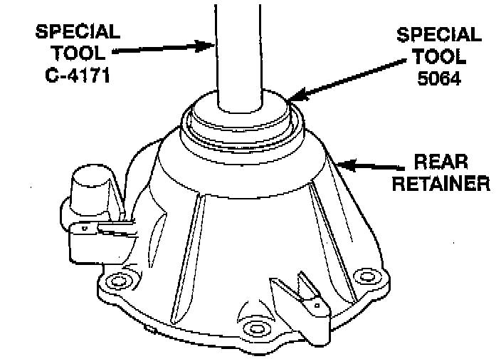
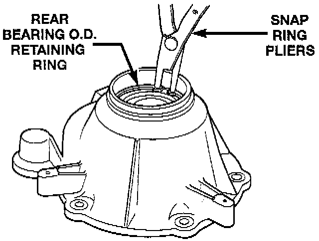
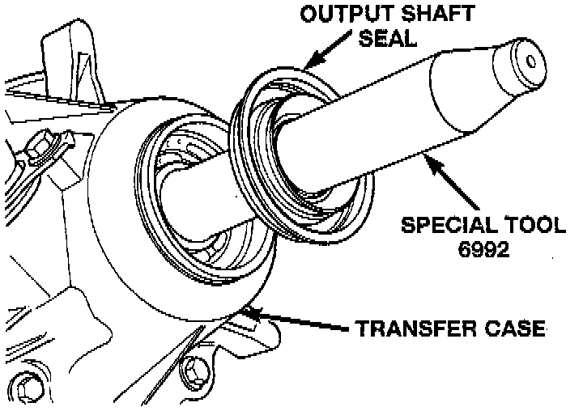
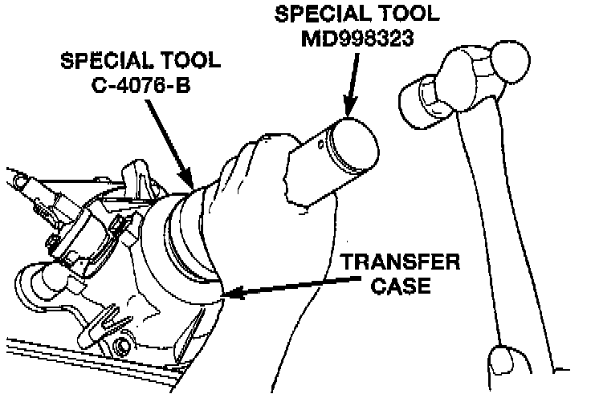
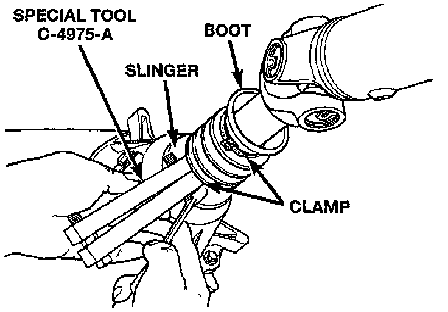

Rear Retainer Installation
1. Remove rear bearing in retainer using Installer 8128 and Handle C-4171, or equivalents.
2. Install rear bearing in retainer with Tools C-4171 and 5064, or equivalents.

3. Install rear bearing O.D. retaining ring with snap-ring pliers. Be sure retaining ring is fully seated in retainer groove.
4. Apply bead of MOPAR Sealer, or Loctite Ultra Gray, to mating surface of rear retainer. Sealer bead should be a maximum of 3/16 inch.
5. Install rear retainer on rear case. Tighten retainer bolts to 20 - 27 Nm (15 - 20 ft. lbs.) torque.
6. Install rear bearing I.D. retaining ring and spacer on output shaft.
7. Apply liberal quantity of petroleum jelly to new rear seal and to output shaft. Petroleum jelly is needed to protect seal lips during installation.

8. Slide seal onto Seal Protector 6992, or equivalent. Slide seal protector and seal onto output shaft.

9. Slide Installer C-4076-B, or equivalent onto seal protector with the recessed side of the tool toward the seal. Drive seal into rear bearing retainer with installer C-4076-B and handle MD-998323, or equivalents.
10. Install rear slinger with installer C-4076-A and handle MD-998323, or equivalents.

11. Install boot on output shaft slinger and crimp retaining clamp with tool C-4975-A, or equivalent.